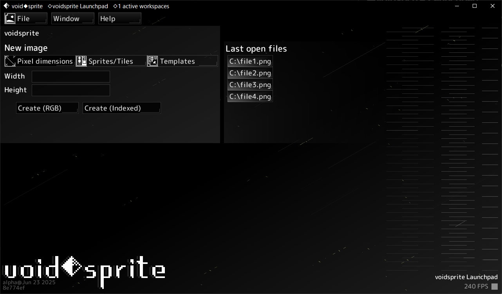

This is the first workspace that appears when you open voidsprite.
It serves as voidsprite's main menu.

The New image panel lets you create a new image. Start by choosing one of 3 modes:
cell width * cell count x cell height * cell count and will have the proper tile grid set automatically.
If not using a template, click the or button to create a new image and open it in a new workspace.
To open a file, drag it into the window. This will open the file in a new workspace.
Alternatively, open the file picker with > on the navigation bar.
To open an image from the clipboard, press the Open from clipboard keybind.
(Default: Ctrl+V)
Alternatively, use > on the navigation bar.
The Last open files panel shows the last 5 recently used files. Click on a file to open it in a new workspace.